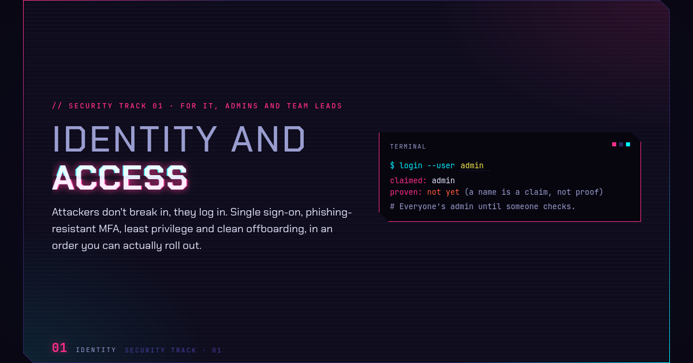
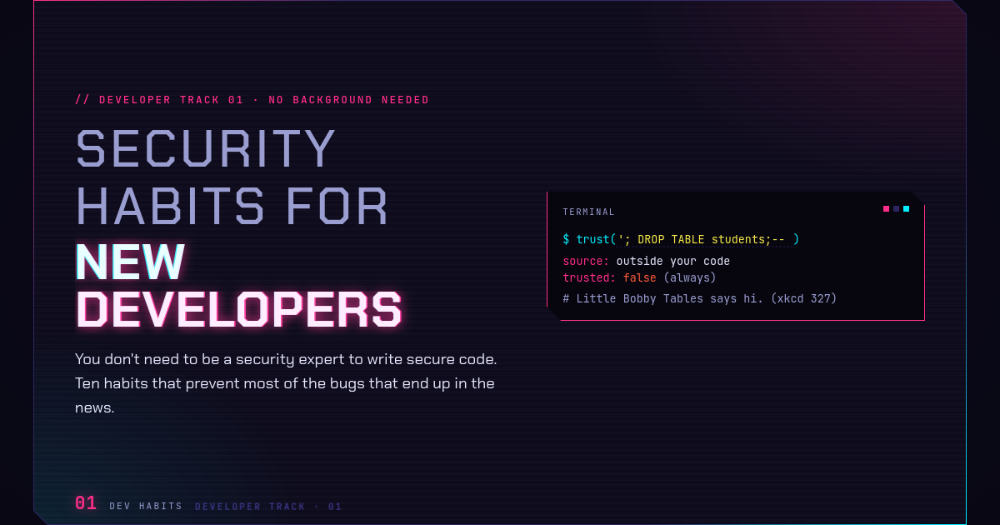
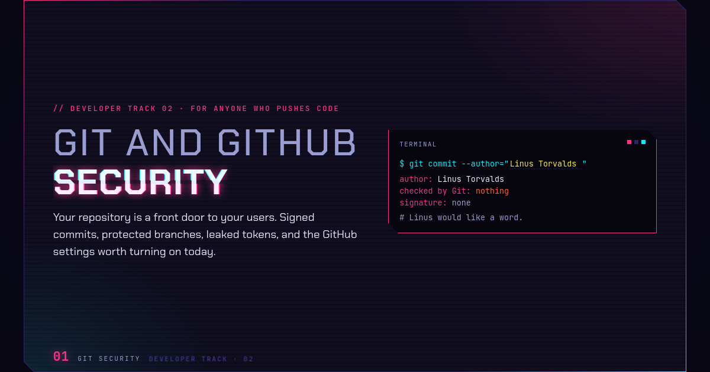

Start here · every track
Crypto 101: Intro to Cryptography
Hashing, encryption, keys and signatures: the ideas every other talk assumes. No background needed.
// ZEVARYX · TALKS
Talks on cryptography and cybersecurity. Every deck runs in your browser, with live demos you can try during the talk and keep using after it. Start with Crypto 101, then pick a track.
Start here · every track
Hashing, encryption, keys and signatures: the ideas every other talk assumes. No background needed.

Cyber in the News · October 2026
The month's security stories, the idea behind each one, and what to actually do. With a bingo card.

Newest talk · Security 01
Attackers don't break in, they log in. SSO, tokens, phishing-resistant MFA and least privilege.
For everyone. Protecting yourself, your accounts and your data, with no technical background needed. Take them in order.

How accounts actually get broken into, and the few habits that stop almost all of it: unique passwords, password managers, two-factor codes (scan a live one with your phone), passkeys and recovery. Ends with a checklist you can do tonight.
Watch first: Crypto 101

Follow one web request from the address bar to the padlock: DNS, what café Wi-Fi can see, a real TLS 1.3 handshake you can step through, certificates and their warnings, and what still leaks. The natural sequel to Crypto 101.
Watch first: Crypto 101
For people who write and ship code. Building software that keeps its users safe. Take them in order.

Trust boundaries, ten habits that prevent most of the bugs in the news, and the everyday ones that make them easy: readable code, testing the unhappy path, tools, docs. With demos you can break.
Watch first: nothing. Crypto 101 helps, but isn't required

Commits worth reading and undoing mistakes without fear, then signed commits and what "Verified" proves, branch rules, good pull requests, secret scanning, safer GitHub Actions, and what to do when a token leaks.
Watch first: Security Habits for New Developers
For IT and security professionals. Defending organisations, from identity to incident response. Take them in order.
Attackers don't break in, they log in. Single sign-on, a real signed ID token you can tamper with, phishing-resistant MFA and push fatigue, conditional access, admin access, joiners and movers, help-desk resets, and a 90-day plan.
Watch first: Passwords and Accounts helps; Crypto 101 for the token maths